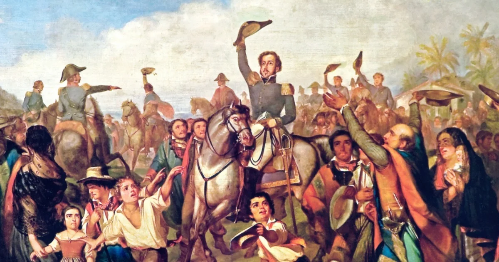
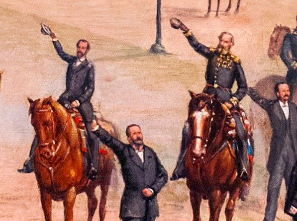

História do Brasil

História do Brasil
A História do Brasil começa com a chegada dos primeiros humanos na América do Sul há pelo menos 22 000 anos AP. Em fins do século XV, quando do Tratado de Tordesilhas, toda a área hoje conhecida como Brasil era habitada por tribos seminômades que subsistiam da caça, pesca, coleta e agricultura.
Descobrimento do Brasil

No dia 22 de abril de 1500 a frota comandada por Pedro Álvares Cabral chegou ao Brasil, batizado inicialmente de Vera Cruz pelos portugueses. Por um longo tempo foi usado o termo "descoberta do Brasil" em uma visão europeia. Entretanto, essas terras já eram habitadas por vários povos indígenas.
O primeiro sinal de terra firme visto pelos portugueses foi o Monte Pascoal, no litoral sul da Bahia. Recebeu este nome por ser época da Páscoa e os portugueses serem católicos. Dias depois desembarcaram em local que deram o nome de Porto Seguro, hoje chamado de Santa Cruz Cabrália, na Bahia.
Independência do Brasil

A independência do Brasil foi o processo histórico de separação entre Brasil e Portugal que se deu em 7 de setembro de 1822. Por meio da independência, o Brasil deixou de ser uma colônia portuguesa e passou a ser uma nação independente.
Proclamação da República

A proclamação da república aconteceu em 15 de novembro de 1889 e resultou na derrubada da monarquia e na instauração da república no Brasil. Esse acontecimento foi resultado de um longo enfraquecimento que a monarquia enfrentou no Brasil a partir da década de 1870. Um dos grupos mais insatisfeitos foi o dos militares.